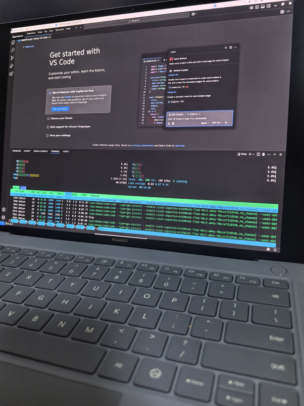

在鸿蒙电脑上的虚拟机内启动 Linux¶
背景¶
最近在研究鸿蒙电脑，群友 @Fearyncess 摸索出了，如何在鸿蒙电脑上的虚拟机内启动 Linux，而不是 Windows。在此做个复现并记录。
方法¶
目前鸿蒙的应用市场上有两家虚拟机，我用 Oseasy 虚拟机，但是理论上铠大师也是可以的。（P.S. @driver1998 反馈：“铠大师测试也能启动，但键盘左右方向键的处理有点问题，虚拟机内收不到按键松开的信号，EFI 和 Linux 里 面都是这样。目前建议用 OSEasy。” 根据评论区反馈，此问题已修复）
首先需要在 U 盘上，把一个 UEFI arm64 的 Linux 安装盘写进去。我用的是 Ventoy + Debian Installer，理论上直接写例如 Debian 发行版的安装 ISO 也是可以的。
然后把 U 盘插到鸿蒙电脑上，打开 Windows 虚拟机，直通到虚拟机里面，保证虚拟机里面可以看到 U 盘。
接着，进入 Windows 磁盘管理，缩小 Windows 的 NTFS 分区，留出空间。注意 Windows 启动的时候会自动 growpart，所以装 Debian 前，不要回到 Windows。装好以后，可以继续用 Windows。
接着，重启 Windows，同时按住 Escape，进入 OVMF 的界面，然后选择 Boot Manager，从 U 盘启动，然后就进入 Ventoy 的界面了。（注：根据 @quiccat 群友提醒，在 Windows 内，通过设置->系统->恢复->高级启动->UEFI 固件设置也可以进入 OVMF 的设置界面）
剩下的就是正常的 Linux 安装过程了，分区的时候，注意保留 Windows 已有的 NTFS，可以和 Windows 用同一个 ESP 分区。网络的话，配置静态 IP 是 172.16.100.2，默认网关是 172.16.100.1 即可。重启以后，在 grub 界面，修改 linux 配置，在 cmdline 一栏添加 modprobe.blacklist=vmwgfx，这样就能启动了。内核版本是 Debian Bookworm 的 6.1。
各内核版本启动情况：
- 5.10 from debian：正常
- 6.1 from debian：正常
- 6.2/6.3/6.4 from kernel.ubuntu.com:
echo simpledrm > /etc/modules-load.d/simpledrm.conf后正常，否则系统可以启动但是图形界面起不来 - 6.5 from kernel.ubuntu.com：起不来，需要强制关机
- 6.12 from debian：起不来，需要强制关机
经过 @Fearyncess 的二分，找到了导致问题的 commit。
最终效果：

主要的遗憾是分辨率：屏幕两侧有黑边，并且由于宽度不同，触摸屏的位置映射会偏中间。
附录¶
Geekbench 6 测试结果：
- 6 核：Windows Single-Core 1436, Multi-Core 5296, Linux Single-Core 1500, Multi-Core 5699
- 8 核：Windows Single-Core 1462, Multi-Core 7043, Linux Single-Core 1489, Multi-Core 6076, Linux Single-Core 1503, Multi-Core 6289
如果没有 blacklist 的话，vmwgfx 驱动的报错：
vmwgfx 0000:00:04.0: [drm] FIFO at 0x0000000020000000 size is 2048 kiB
vmwgfx 0000:00:04.0: [drm] VRAM at 0x0000000010000000 size is 262144 kiB
vmwgfx 0000:00:04.0: [drm] *ERROR* Unsupported SVGA ID 0xffffffff on chipset 0x405
vmwgfx: probe of 0000:00:04.0 failed with error -38
blacklist vmwgfx 后用的是 efifb：
[ 0.465898] pci 0000:00:04.0: BAR 1: assigned to efifb
[ 1.197638] efifb: probing for efifb
[ 1.197705] efifb: framebuffer at 0x10000000, using 7500k, total 7500k
[ 1.197708] efifb: mode is 1600x1200x32, linelength=6400, pages=1
[ 1.197711] efifb: scrolling: redraw
[ 1.197712] efifb: Truecolor: size=8:8:8:8, shift=24:16:8:0
虚拟机的 IP 地址，从宿主机也可以直接访问，通过 WVMBr 访问，目测是直接 Tap 接出来，然后建了个 Bridge，外加 NAT，只是没有 DHCP。
融合开发引擎¶
2026/04/01 更新：《融合开发引擎》App 在应用市场的应用尝鲜上架，可以获得一个 Linux 环境，Linux 6.6.0 内核的 openeuler。使用可见网络上的视频 鸿蒙电脑官方欧拉虚拟机上线。想用 Debian 的话，也可以按照 HarmonyOS 6 Linux 容器替换成 debian trixie 换成 Debian。
2026/09/18 更新：《融合开发引擎》7.0.0.6 版本修改了启动流程，会导致用之前的方法把 openeuler 替换为 debian trixie 后的 Linux 环境无法启动，说找不到 wheel 组，是在 /etc/hsl/oobe 脚本里给用户设置 group 时报错。需要重置系统后，用 root 权限重新跑一次 更新后的脚本。跑完以后，记得修改 user 和 root 用户的密码。
挂载容器外面的 rootfs：
外面 rootfs 里的一些有意思的文件：
- /etc/ozonec.json：能看到容器的配置，挂载了哪些路径，给了哪些 cap
- /usr/sbin/HSLd：init 程序
除了 vda，还可以挂载 vdb：
容器的 rootfs 是一个 overlayfs，lower 是 /var/lib/OzoneC/overlay2/rgm_openEuler/lower，它在这个 vdb 下面，虽然是空目录，但应该是把 /var/lib/OzoneC/image/openEuler.img 通过 loop device 挂载上去，也就是说 lower 就是 openeuler，upper 是容器的 rootfs，重置系统，只需要把 work 清空。这里面 /var/log 下还能看到 HSLd 以及 ozonec 的一些日志，overlay 的相关配置等等。
7.0.0.6 版本也加了一个 loh 命令，大概就是 Linux on HarmonyOS 的意思，与 WSL 命令对标。这个可用性已经很不错了，期待未来 WSLg 类似功能的实现。